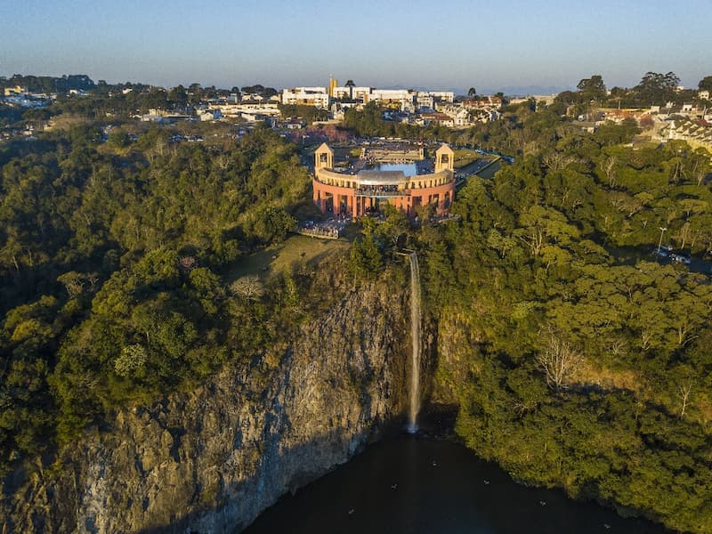

Curitiba é uma capital marcante por sua harmonia entre o desenvolvimento urbano e a preservação ambiental. Conhecida internacionalmente por seu planejamento inovador e pelo transporte público eficiente, a cidade encanta quem a visita com mais de 40 parques e bosques que colorem a paisagem urbana. Com um clima subtropical que lhe rende o título de capital mais fria do Brasil, Curitiba respira cultura através da herança de imigrantes europeus, visível na arquitetura, na gastronomia e em seus cartões-postais — como a icônica estufa de ferro e vidro do Jardim Botânico e o design arrojado do Museu Oscar Niemeyer. É um destino que combina a pulsação de uma metrópole com a tranquilidade de suas extensas áreas verdes.
O Parque Tanguá é considerado um dos cartões-postais mais impressionantes de Curitiba, famoso principalmente por oferecer o pôr do sol mais bonito da cidade. Inaugurado em 1996, o espaço é um exemplo de requalificação urbana, pois foi construído no local de um complexo de antigas pedreiras desativadas
